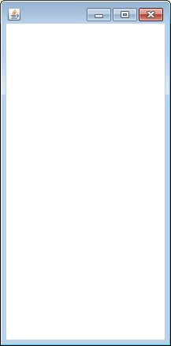
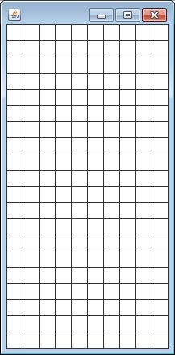
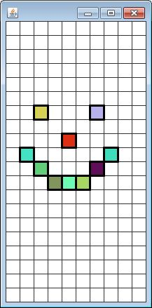
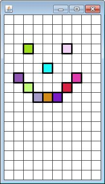

Create a class named TetrisView . The purpose of the TetrisView will be to access all of the elements in the TetrisModel and decide how to represent them visually.
For instance fields, a TetrisView should have a TetrisModel and an int to represent the block size.
The Constructor for TetrisView should take in a TetrisModel as a parameter and assign it to the instance fields, as well as set the block size field to a number around 25 or 30.
Add methods getWidth, getHeight, and
getBlockSize. The purpose of these methods is to return how
many pixels wide/tall the Tetris window should be. DO NOT CREATE INSTANCE FIELDS
FOR THEM. You should use math to figure out the dimensions of the grid.
HINT: The width can be determined using the block size and the number of columns
that the grid has (TetrisModel should have a getGrid method). Also, add 1 to the
width and height to accommodate for the border.
The TetrisView object's main job is to reference the Model's data and decide what to paint. There are three main parts to paint, the grid lines, the blocks in the grid, and the tetris piece. Instead of crammin all of that code into one method named paintTetris, we're going to add methods that perform each individual task. The paintTetris method's purpose will be to delegate the painting out to each of the methods.
Copy the following incomplete methods to your TetrisView class:
public void paintTetris(Canvas c)
{
this.paintGridLines(c);
this.paintGridBlocks(c);
this.paintPiece(c);
}
private void paintGridLines(Canvas c)
{
//paint only the grid lines
}
private void paintBlock(Block b,Canvas c)
{
//paint the given block using the Canvas
}
private void paintGridBlocks(Canvas c)
{
//paint only the Blocks that are in the TetrisGrid
}
private void paintPiece(Canvas c)
{
//paint only the Blocks that the Tetris Piece has
}
Notice that the only public paint method is the paintTetris method. The other methods are there to help out the paintTetris method. There are private because they are not meant to be accessed on their own, only via the paintTetris method.
An important part of the MVC model is the user. Someone has to see what the TetrisView has to show and respond with key pressed. This means it's time to enlist the help of a SaccoWindow. The SaccoWindow already has the ability to draw to the screen and listen for key presses. We just need to modify it to fit our situation.
import sacco.*;
import sacco.gui.*;
public class Tetris extends SaccoWindow
{
private TetrisModel model;
private TetrisView view;
public Tetris()
{
model = new TetrisModel();
view = new TetrisView (model);
}
public void paintWindow(Canvas c)
{
view.paintTetris(c);
}
public void launch()
{
this.setSize(view.getWidth(),view.getHeight());
this.setVisible(true);
this.start();
}
public static void main()
{
Tetris t = new Tetris();
t.launch();
}
}
For now the Tetris class has as its instance fields a TetrisModel and a TetrisView . A later version will have a TetrisController, but for now we’ll just work with the two that we’ve created.
The Constructor makes sure that the Model and Viewer are all set up properly. This is where the view gets linked to the model.
The paintWindow method: This is the method that a SaccoWindow uses to determine what is painted. Since the TetrisView is in charge of the visual, the paintTetris method is called.
The launch method: This method takes care of the little method calls that are needed to launch the Sacco Object. The width and height of the window are set to the width and height of the TetrisView .
The main method: This is the method that gets the whole thing going. It simply constructs and launches the Tetris object.
At the moment, we've yet to see any visual part of the game. Finally we are at a point where we can test it out. Run the main method. Since we haven't done anything int the paint method, nothing should show up. You should get a blank window, with a similar shape as the following:

We are first going to work on painting the lines that divide the grid into individual locations. All of this should happen in the paintGridLines method. Set the canvas color to black and then use a loop to draw the lines that define the grid. You do not have to paint any of the blocks yet, just the lines. You will probably want to use the getWidth and getHeight methods in order to get the coordinates just right.

Now that we know the grid lines are drawn properly, it's time to draw the Blocks that are located in the Grid by adding code to the paintGridBlocks method, so there is another method that should be useful to the others:
private void paintBlock(Block b,Canvas c)
This method's job is to paint the given Block on the Canvas. This means that you will need to first get the Block's Color and Location. Once you have those, don't forget to convert the rows/columns to x/y to make painting easier. Fill a rectangle with your block size as the width and height. It looks classier if you then change the color to black and draw the same rectangle.
private void paintGridBlocks(Canvas c)
Now that your helper method is done, the paintGridBlocks method should be much easier. The purpose is to find every Block in the grid and paint it. A helpful method to use would be TetrisGrid's getBlocks method. It should then be simple to loop through each of the Blocks and call the paintBlock method.
To test whether this works or not, we will temporarily modify TetrisGrid's constructor to have the line:
this.quickLoadBlocks(new int[][]{{6,2},{6,6},{8,4},{9,1},{9,7},{10,2},{10,6},{11,3},{11,4},{11,5}});
If all goes well, the following will be displayed when you run it:

At the moment, the TetViewer draws every single location of the grid. In reality, we are going to need a few rows that are above the screen and are not painted. Luckily, this has nothing to do with the model, we only have to change elements of the TetrisView class.
Having a 3 row buffer above the visual area should be plenty. This means that rows 0, 1, and 2 will not be drawn, and every Block should then be painted 3 rows above where the usually are painted.
In order to accomodate this, modifications must be made to the following:
- The getHeight method: Currently you use the number of rows to determine the height of the screen. Modify it so that you subtract 3 from the row before using it to calculate the height.
- The paintBlock method: Every Block is currently being painted exactly at its location. Just like before, get the row and subtract 3 before you calculate the location.
Run the program again to verify that the window shows 3 fewer rows, and all the Blocks are painted 3 rows higher than before.
